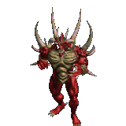

Forums galactiques > Taverne galactique : lieu de discussion informel > jeu HRP 2
Pages : 1 2 ... 18 19 20 ... 25 26
| Elenna Réputation à la taverne : 17 03/02 ETU 23:03 | Score : 0 Détails edit
| ||
| Vaeddan Réputation à la taverne : 98 03/02 ETU 23:03 | Score : 0 Détails dans une cafétéria gérée par un alcoolique notoire qui ne pouvait dormir sans taper des pieds, un molusque mangeait un monton, et grignotai, tranquilement dans son coin,une salade. Lorsque un escargot arriva, il lui dit :salut, passes moi le sel !
-Non -Pourquoi -J'ai faim -Prend ca dans ta figure et la, l'escargot sort un bazooka a tomates et tir dans le nez du molusque (?!) Celui ci riposte et arrache le bazooka. Il assome l'esgargot d'un revers de bazzoka splendide. Surgit alors un gendarme nain soul déguisé en canadien qui dit: vous l'avez foutu ou le sel ? -dans ton porte-feuille de combat ! -tu te fous de ma geule ? -oui Le gendarme alors sortit de sa fausse poche sur le coté de son pantalon en peau de crocodile méxicain un biberon remplit delailait qui peut exploser si il y a de la nitro dedans et | ||
| DarthEry Réputation à la taverne : 20  03/02 ETU 23:04 | Score : 1 Détails dans une cafétéria gérée par un alcoolique notoire qui ne pouvait dormir sans taper des pieds, un molusque mangeait un monton, et grignotai, tranquilement dans son coin,une salade. Lorsque un escargot arriva, il lui dit :salut, passes moi le sel !
-Non -Pourquoi -J'ai faim -Prend ca dans ta figure et la, l'escargot sort un bazooka a tomates et tir dans le nez du molusque (?!) Celui ci riposte et arrache le bazooka. Il assome l'esgargot d'un revers de bazzoka splendide. Surgit alors un gendarme nain soul déguisé en canadien qui dit: vous l'avez foutu ou le sel ? -dans ton porte-feuille de combat ! -tu te fous de ma geule ? -oui Le gendarme alors sortit de sa fausse poche sur le coté de son pantalon en peau de crocodile méxicain un biberon remplit delailait qui peut exploser si il y a de la nitro dedans et il y en avait | ||
| Madame Démocratie Réputation à la taverne : 47  03/02 ETU 23:05 | Score : 0 Détails edit
[hrp / C'est un peu le bordel là... /hrp] | ||
| Elenna Réputation à la taverne : 17 03/02 ETU 23:05 | Score : 0 Détails dans une cafétéria gérée par un alcoolique notoire qui ne pouvait dormir sans taper des pieds, un molusque mangeait un monton, et grignotai, tranquilement dans son coin,une salade. Lorsque un escargot arriva, il lui dit :salut, passes moi le sel !
-Non -Pourquoi -J'ai faim -Prend ca dans ta figure et la, l'escargot sort un bazooka a tomates et tir dans le nez du molusque (?!) Celui ci riposte et arrache le bazooka. Il assome l'esgargot d'un revers de bazzoka splendide. Surgit alors un gendarme nain soul déguisé en canadien qui dit: vous l'avez foutu ou le sel ? -dans ton porte-feuille de combat ! -tu te fous de ma geule ? -oui Le gendarme alors sortit de sa fausse poche sur le coté de son pantalon en peau de crocodile méxicain un biberon remplit delailait qui peut exploser si il y a de la nitro dedans et il y en avait boum | ||
| DarthEry Réputation à la taverne : 20 03/02 ETU 23:06 | Score : 1 Détails dans une cafétéria gérée par un alcoolique notoire qui ne pouvait dormir sans taper des pieds, un molusque mangeait un monton, et grignotai, tranquilement dans son coin,une salade. Lorsque un escargot arriva, il lui dit :salut, passes moi le sel !
-Non -Pourquoi -J'ai faim -Prend ca dans ta figure et la, l'escargot sort un bazooka a tomates et tir dans le nez du molusque (?!) Celui ci riposte et arrache le bazooka. Il assome l'esgargot d'un revers de bazzoka splendide. Surgit alors un gendarme nain soul déguisé en canadien qui dit: vous l'avez foutu ou le sel ? -dans ton porte-feuille de combat ! -tu te fous de ma geule ? -oui Le gendarme alors sortit de sa fausse poche sur le coté de son pantalon en peau de crocodile méxicain un biberon remplit delailait qui peut exploser si il y a de la nitro dedans et il y en avait boum le mouton, qui en avait profité pour filer, | ||
| Elenna Réputation à la taverne : 17 03/02 ETU 23:10 | Score : 0 Détails dans une cafétéria gérée par un alcoolique notoire qui ne pouvait dormir sans taper des pieds, un molusque mangeait un monton, et grignotai, tranquilement dans son coin,une salade. Lorsque un escargot arriva, il lui dit :salut, passes moi le sel !
-Non -Pourquoi -J'ai faim -Prend ca dans ta figure et la, l'escargot sort un bazooka a tomates et tir dans le nez du molusque (?!) Celui ci riposte et arrache le bazooka. Il assome l'esgargot d'un revers de bazzoka splendide. Surgit alors un gendarme nain soul déguisé en canadien qui dit: vous l'avez foutu ou le sel ? -dans ton porte-feuille de combat ! -tu te fous de ma geule ? -oui Le gendarme alors sortit de sa fausse poche sur le coté de son pantalon en peau de crocodile méxicain un biberon remplit delailait qui peut exploser si il y a de la nitro dedans et il y en avait boum le mouton, qui en avait profité pour filer,se cassa une patte en | ||
| Baby_comdant Réputation à la taverne : 54 03/02 ETU 23:16 | Score : 0 Détails Dans une cafétéria gérée par un alcoolique notoire qui ne pouvait dormir sans taper des pieds, un molusque mangeait un monton, et grignotai, tranquilement dans son coin,une salade. Lorsque un escargot arriva, il lui dit :salut, passes moi le sel !
-Non -Pourquoi -J'ai faim -Prend ca dans ta figure et la, l'escargot sort un bazooka a tomates et tir dans le nez du molusque (?!) Celui ci riposte et arrache le bazooka. Il assome l'esgargot d'un revers de bazzoka splendide. Surgit alors un gendarme nain soul déguisé en canadien qui dit: vous l'avez foutu ou le sel ? -dans ton porte-feuille de combat ! -tu te fous de ma geule ? -oui Le gendarme alors sortit de sa fausse poche sur le coté de son pantalon en peau de crocodile méxicain un biberon remplit delailait qui peut exploser si il y a de la nitro dedans et il y en avait boum le mouton, qui en avait profité pour filer,se cassa une patte en fracture irreparrable | ||
| piti man Réputation à la taverne : 5 03/02 ETU 23:22 | Score : 0 Détails Dans une cafétéria gérée par un alcoolique notoire qui ne pouvait dormir sans taper des pieds, un molusque mangeait un monton, et grignotai, tranquilement dans son coin,une salade. Lorsque un escargot arriva, il lui dit :salut, passes moi le sel !
-Non -Pourquoi -J'ai faim -Prend ca dans ta figure et la, l'escargot sort un bazooka a tomates et tir dans le nez du molusque (?!) Celui ci riposte et arrache le bazooka. Il assome l'esgargot d'un revers de bazzoka splendide. Surgit alors un gendarme nain soul déguisé en canadien qui dit: vous l'avez foutu ou le sel ? -dans ton porte-feuille de combat ! -tu te fous de ma geule ? -oui Le gendarme alors sortit de sa fausse poche sur le coté de son pantalon en peau de crocodile méxicain un biberon remplit delailait qui peut exploser si il y a de la nitro dedans et il y en avait boum le mouton, qui en avait profité pour filer,se cassa une patte en fracture irreparrablE Ce mouton n'avait jamais eu | ||
| Madame Démocratie Réputation à la taverne : 47 03/02 ETU 23:32 | Score : 0 Détails Dans une cafétéria gérée par un alcoolique notoire qui ne pouvait dormir sans taper des pieds, un molusque mangeait un monton, et grignotai, tranquilement dans son coin,une salade. Lorsque un escargot arriva, il lui dit :salut, passes moi le sel !
-Non -Pourquoi -J'ai faim -Prend ca dans ta figure et la, l'escargot sort un bazooka a tomates et tir dans le nez du molusque (?!) Celui ci riposte et arrache le bazooka. Il assome l'esgargot d'un revers de bazzoka splendide. Surgit alors un gendarme nain soul déguisé en canadien qui dit: vous l'avez foutu ou le sel ? -dans ton porte-feuille de combat ! -tu te fous de ma geule ? -oui Le gendarme alors sortit de sa fausse poche sur le coté de son pantalon en peau de crocodile méxicain un biberon remplit delailait qui peut exploser si il y a de la nitro dedans et il y en avait boum le mouton, qui en avait profité pour filer,se cassa une patte en fracture irreparrablE. Ce mouton n'avait jamais eu de chance dans sa vie ... | ||
| Elenna Réputation à la taverne : 17 03/02 ETU 23:33 | Score : 0 Détails Dans une cafétéria gérée par un alcoolique notoire qui ne pouvait dormir sans taper des pieds, un molusque mangeait un monton, et grignotai, tranquilement dans son coin,une salade. Lorsque un escargot arriva, il lui dit :salut, passes moi le sel !
-Non -Pourquoi -J'ai faim -Prend ca dans ta figure et la, l'escargot sort un bazooka a tomates et tir dans le nez du molusque (?!) Celui ci riposte et arrache le bazooka. Il assome l'esgargot d'un revers de bazzoka splendide. Surgit alors un gendarme nain soul déguisé en canadien qui dit: vous l'avez foutu ou le sel ? -dans ton porte-feuille de combat ! -tu te fous de ma geule ? -oui Le gendarme alors sortit de sa fausse poche sur le coté de son pantalon en peau de crocodile méxicain un biberon remplit delailait qui peut exploser si il y a de la nitro dedans et il y en avait boum le mouton, qui en avait profité pour filer,se cassa une patte en fracture irreparrablE. Ce mouton n'avait jamais eu de chance dans sa vie. Il avait tout d'abord vécu à | ||
| Madame Démocratie Réputation à la taverne : 47 03/02 ETU 23:42 | Score : 0 Détails Dans une cafétéria gérée par un alcoolique notoire qui ne pouvait dormir sans taper des pieds, un molusque mangeait un monton, et grignotai, tranquilement dans son coin,une salade. Lorsque un escargot arriva, il lui dit :salut, passes moi le sel !
-Non -Pourquoi -J'ai faim -Prend ca dans ta figure et la, l'escargot sort un bazooka a tomates et tir dans le nez du molusque (?!) Celui ci riposte et arrache le bazooka. Il assome l'esgargot d'un revers de bazzoka splendide. Surgit alors un gendarme nain soul déguisé en canadien qui dit: vous l'avez foutu ou le sel ? -dans ton porte-feuille de combat ! -tu te fous de ma geule ? -oui Le gendarme alors sortit de sa fausse poche sur le coté de son pantalon en peau de crocodile méxicain un biberon remplit delailait qui peut exploser si il y a de la nitro dedans et il y en avait boum le mouton, qui en avait profité pour filer,se cassa une patte en fracture irreparrablE. Ce mouton n'avait jamais eu de chance dans sa vie. Il avait tout d'abord vécu à Pauvrecity (ville qui est ... | ||
| piti man Réputation à la taverne : 5 03/02 ETU 23:49 | Score : 1 Détails Dans une cafétéria gérée par un alcoolique notoire qui ne pouvait dormir sans taper des pieds, un molusque mangeait un monton, et grignotai, tranquilement dans son coin,une salade. Lorsque un escargot arriva, il lui dit :salut, passes moi le sel !
-Non -Pourquoi -J'ai faim -Prend ca dans ta figure et la, l'escargot sort un bazooka a tomates et tir dans le nez du molusque (?!) Celui ci riposte et arrache le bazooka. Il assome l'esgargot d'un revers de bazzoka splendide. Surgit alors un gendarme nain soul déguisé en canadien qui dit: vous l'avez foutu ou le sel ? -dans ton porte-feuille de combat ! -tu te fous de ma geule ? -oui Le gendarme alors sortit de sa fausse poche sur le coté de son pantalon en peau de crocodile méxicain un biberon remplit delailait qui peut exploser si il y a de la nitro dedans et il y en avait boum le mouton, qui en avait profité pour filer,se cassa une patte en fracture irreparrablE. Ce mouton n'avait jamais eu de chance dans sa vie. Il avait tout d'abord vécu à Pauvrecity (ville qui est introuvable sur aucune cartes!) | ||
| Alfa3 Réputation à la taverne : 2 04/02 ETU 09:37 | Score : 0 Détails Dans une cafétéria gérée par un alcoolique notoire qui ne pouvait dormir sans taper des pieds, un molusque mangeait un monton, et grignotai, tranquilement dans son coin,une salade. Lorsque un escargot arriva, il lui dit :salut, passes moi le sel !
-Non -Pourquoi -J'ai faim -Prend ca dans ta figure et la, l'escargot sort un bazooka a tomates et tir dans le nez du molusque (?!) Celui ci riposte et arrache le bazooka. Il assome l'esgargot d'un revers de bazzoka splendide. Surgit alors un gendarme nain soul déguisé en canadien avec un | ||
| Alfa3 Réputation à la taverne : 2 04/02 ETU 09:39 | Score : 0 Détails escuzer moi j'ai un train de retard
| ||
| Madame Démocratie Réputation à la taverne : 47 04/02 ETU 09:52 | Score : 0 Détails Dans une cafétéria gérée par un alcoolique notoire qui ne pouvait dormir sans taper des pieds, un molusque mangeait un monton, et grignotai, tranquilement dans son coin,une salade. Lorsque un escargot arriva, il lui dit :salut, passes moi le sel !
-Non -Pourquoi -J'ai faim -Prend ca dans ta figure et la, l'escargot sort un bazooka a tomates et tir dans le nez du molusque (?!) Celui ci riposte et arrache le bazooka. Il assome l'esgargot d'un revers de bazzoka splendide. Surgit alors un gendarme nain soul déguisé en canadien qui dit: vous l'avez foutu ou le sel ? -dans ton porte-feuille de combat ! -tu te fous de ma geule ? -oui Le gendarme alors sortit de sa fausse poche sur le coté de son pantalon en peau de crocodile méxicain un biberon remplit delailait qui peut exploser si il y a de la nitro dedans et il y en avait boum le mouton, qui en avait profité pour filer,se cassa une patte en fracture irreparrablE. Ce mouton n'avait jamais eu de chance dans sa vie. Il avait tout d'abord vécu à Pauvrecity (ville qui est introuvable sur aucune cartes!) Et après ... | ||
| Alfa3 Réputation à la taverne : 2 04/02 ETU 09:55 | Score : 0 Détails Dans une cafétéria gérée par un alcoolique notoire qui ne pouvait dormir sans taper des pieds, un molusque mangeait un monton, et grignotai, tranquilement dans son coin,une salade. Lorsque un escargot arriva, il lui dit :salut, passes moi le sel !
-Non -Pourquoi -J'ai faim -Prend ca dans ta figure et la, l'escargot sort un bazooka a tomates et tir dans le nez du molusque (?!) Celui ci riposte et arrache le bazooka. Il assome l'esgargot d'un revers de bazzoka splendide. Surgit alors un gendarme nain soul déguisé en canadien qui dit: vous l'avez foutu ou le sel ? -dans ton porte-feuille de combat ! -tu te fous de ma geule ? -oui Le gendarme alors sortit de sa fausse poche sur le coté de son pantalon en peau de crocodile méxicain un biberon remplit delailait qui peut exploser si il y a de la nitro dedans et il y en avait boum le mouton, qui en avait profité pour filer,se cassa une patte en fracture irreparrablE. Ce mouton n'avait jamais eu de chance dans sa vie. Il avait tout d'abord vécu à Pauvrecity (ville qui est introuvable sur aucune cartes!) Et après ...le mouton, | ||
| DarthEry Réputation à la taverne : 20 04/02 ETU 11:51 | Score : 0 Détails Dans une cafétéria gérée par un alcoolique notoire qui ne pouvait dormir sans taper des pieds, un molusque mangeait un monton, et grignotai, tranquilement dans son coin,une salade. Lorsque un escargot arriva, il lui dit :salut, passes moi le sel !
-Non -Pourquoi -J'ai faim -Prend ca dans ta figure et la, l'escargot sort un bazooka a tomates et tir dans le nez du molusque (?!) Celui ci riposte et arrache le bazooka. Il assome l'esgargot d'un revers de bazzoka splendide. Surgit alors un gendarme nain soul déguisé en canadien qui dit: vous l'avez foutu ou le sel ? -dans ton porte-feuille de combat ! -tu te fous de ma geule ? -oui Le gendarme alors sortit de sa fausse poche sur le coté de son pantalon en peau de crocodile méxicain un biberon remplit delailait qui peut exploser si il y a de la nitro dedans et il y en avait boum le mouton, qui en avait profité pour filer,se cassa une patte en fracture irreparrablE. Ce mouton n'avait jamais eu de chance dans sa vie. Il avait tout d'abord vécu à Pauvrecity (ville qui est introuvable sur aucune cartes!) Et après, le mouton, dans son adolescence, | ||
| Alfa3 Réputation à la taverne : 2 04/02 ETU 11:52 | Score : 0 Détails Dans une cafétéria gérée par un alcoolique notoire qui ne pouvait dormir sans taper des pieds, un molusque mangeait un monton, et grignotai, tranquilement dans son coin,une salade. Lorsque un escargot arriva, il lui dit :salut, passes moi le sel !
-Non -Pourquoi -J'ai faim -Prend ca dans ta figure et la, l'escargot sort un bazooka a tomates et tir dans le nez du molusque (?!) Celui ci riposte et arrache le bazooka. Il assome l'esgargot d'un revers de bazzoka splendide. Surgit alors un gendarme nain soul déguisé en canadien qui dit: vous l'avez foutu ou le sel ? -dans ton porte-feuille de combat ! -tu te fous de ma geule ? -oui Le gendarme alors sortit de sa fausse poche sur le coté de son pantalon en peau de crocodile méxicain un biberon remplit delailait qui peut exploser si il y a de la nitro dedans et il y en avait boum le mouton, qui en avait profité pour filer,se cassa une patte en fracture irreparrablE. Ce mouton n'avait jamais eu de chance dans sa vie. Il avait tout d'abord vécu à Pauvrecity (ville qui est introuvable sur aucune cartes!) Et après, le mouton, dans son adolescence fait un | ||
| Baby_comdant Réputation à la taverne : 54 04/02 ETU 11:57 | Score : 0 Détails Dans une cafétéria gérée par un alcoolique notoire qui ne pouvait dormir sans taper des pieds, un molusque mangeait un monton, et grignotai, tranquilement dans son coin,une salade. Lorsque un escargot arriva, il lui dit :salut, passes moi le sel !
-Non -Pourquoi -J'ai faim -Prend ca dans ta figure et la, l'escargot sort un bazooka a tomates et tir dans le nez du molusque (?!) Celui ci riposte et arrache le bazooka. Il assome l'esgargot d'un revers de bazzoka splendide. Surgit alors un gendarme nain soul déguisé en canadien qui dit: vous l'avez foutu ou le sel ? -dans ton porte-feuille de combat ! -tu te fous de ma geule ? -oui Le gendarme alors sortit de sa fausse poche sur le coté de son pantalon en peau de crocodile méxicain un biberon remplit delailait qui peut exploser si il y a de la nitro dedans et il y en avait boum le mouton, qui en avait profité pour filer,se cassa une patte en fracture irreparrablE. Ce mouton n'avait jamais eu de chance dans sa vie. Il avait tout d'abord vécu à Pauvrecity (ville qui est introuvable sur aucune cartes!) Et après, le mouton, dans son adolescence fait un bond sur le coter |
Pages : 1 2 ... 18 19 20 ... 25 26
Forums galactiques > Taverne galactique : lieu de discussion informel > jeu HRP 2